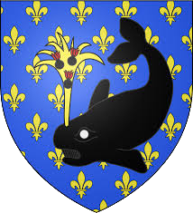
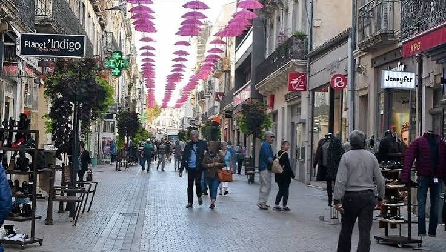
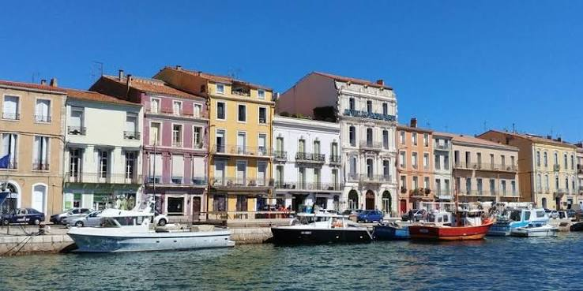
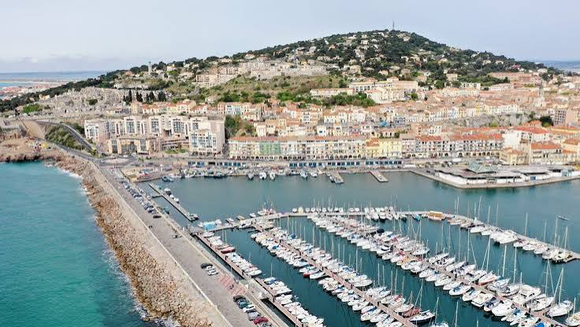
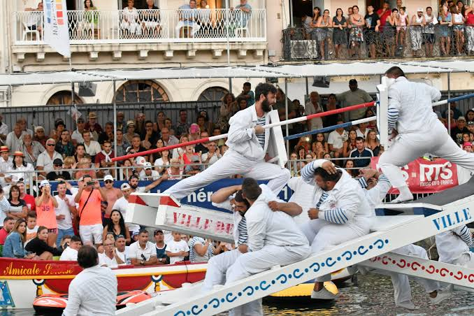

Sète
La Venise du
Languedoc


⟹ Port · Canaux · Étang de Thau ⟸

Avant Sète : un cap entre mer, étang et routes maritimes. Bien avant la naissance de la ville, le mont Saint-Clair constitue un amer naturel pour les navigateurs. À ses pieds s'étendent lagunes, graus, marais salants et rivages peu urbanisés, entre Méditerranée et étang de Thau. Le site dépend longtemps du diocèse d'Agde. Sa position, protégée par le relief et placée au débouché naturel du Languedoc, explique pourquoi les souverains français envisagent très tôt d'y établir un grand port.
1666 : le port précède la ville. Après plusieurs projets restés sans lendemain sous Henri IV et Louis XIII, Louis XIV et Colbert décident de doter le Languedoc d'un port capable d'ouvrir la province sur la Méditerranée et de servir de débouché maritime au futur canal de Riquet. Le 29 juillet 1666, la pose de la première pierre du môle Saint-Louis marque traditionnellement la naissance de Cette. Le chantier du port attire ouvriers, artisans, marins, pêcheurs et négociants ; la ville se forme autour de cette infrastructure maritime et non l'inverse.
Une ville née du commerce. Dès la fin du XVIIe siècle, le nouveau port cherche sa place dans les grands échanges méditerranéens. Des compagnies de commerce sont créées et les quais voient circuler laines et cotons du Levant, bois, riz et huiles d'Italie et de Sardaigne, grains d'Espagne, de Sicile et des côtes de Barbarie, ainsi que diverses marchandises venues d'Europe du Nord. Cette vocation commerciale devient l'un des moteurs permanents de l'histoire sétoise.

Le XVIIIe siècle et les ambitions du grand commerce. Sète tente aussi de participer aux circuits atlantiques. Un épisode documenté par les Archives départementales de l'Hérault est celui du navire Le Languedocien, parti en 1726 vers les côtes de Guinée puis les colonies américaines dans le cadre de la traite négrière. Cet épisode, réel mais limité, ne fait pas de Sète un grand port négrier comparable à Bordeaux, Nantes ou La Rochelle ; il rappelle cependant que le jeune port était déjà inséré dans les réseaux commerciaux internationaux de son époque.
XIXe siècle : l'âge du vin, du rail et des échanges avec l'Algérie. La croissance s'accélère avec l'exportation des vins et eaux-de-vie du Languedoc. Entrepôts, chais, tonnelleries et maisons de négoce bordent les quais. L'ouverture de la ligne ferroviaire Montpellier–Sète en 1839 renforce le rôle du port en reliant directement l'arrière-pays aux bassins maritimes. Sète devient alors un port d'échanges majeur avec l'Algérie : marchandises, voyageurs et circulations humaines font de la ville l'un des traits d'union entre le Midi français et l'Afrique du Nord.
Une véritable porte ouverte sur l'Afrique. Cette relation avec la rive sud de la Méditerranée ne relève donc pas seulement de l'époque contemporaine. Au XIXe puis au XXe siècle, les relations avec l'Algérie et plus largement le Maghreb occupent une place importante dans la vie portuaire. Après les indépendances, les flux changent mais ne disparaissent pas : ferries, marchandises, véhicules et passagers entretiennent la continuité maritime. Aujourd'hui encore, les liaisons avec le Maroc inscrivent Sète dans un espace méditerranéen qui relie directement l'Europe occidentale à l'Afrique du Nord.
Le port de commerce : la grande façade économique de Sète. Aux trafics traditionnels du vin se sont ajoutés au fil du temps céréales, charbon, bois, hydrocarbures, produits chimiques, vracs, véhicules, colis lourds et marchandises diverses. Le port s'est agrandi vers l'est, tandis que les bassins historiques sont restés intimement mêlés au centre-ville. Cette proximité exceptionnelle explique le paysage sétois : ici, la ville, les canaux, les quais de pêche et les installations commerciales appartiennent à une même histoire.

La pêche : une seconde colonne vertébrale maritime. Parallèlement au grand commerce, Sète développe une puissante activité halieutique. La situation entre mer ouverte et étang de Thau favorise des pratiques complémentaires : petits métiers côtiers, pêche lagunaire, chalutage et, plus tard, pêche au thon. Les retours de pêche dans les canaux et le Vieux-Port deviennent l'une des images les plus caractéristiques de la ville.
L'apport des pêcheurs italiens. À partir du XIXe siècle, et particulièrement vers le milieu du siècle, des familles venues de la région de Naples et de la côte amalfitaine s'installent à Sète. Elles participent fortement au développement de la pêche maritime et marquent durablement le Quartier Haut, ses traditions, son parler et sa cuisine. Cette immigration explique en partie les profondes influences italiennes de la gastronomie sétoise : tielle, macaronade, bourride et nombreuses préparations de poissons et de poulpes s'inscrivent dans cette culture populaire du port.
La Pointe Courte et les « petits métiers ». Sur l'étang de Thau, la Pointe Courte conserve une autre mémoire de la pêche sétoise. Les pêcheurs y pratiquent traditionnellement une pêche artisanale adaptée aux lagunes et aux petits fonds. Barques, filets, nasses et savoir-faire transmis entre générations composent un univers différent de celui des chalutiers, mais tout aussi essentiel à l'identité maritime locale.
Chalutiers, thoniers et criée : une filière organisée autour du poisson. Au XXe siècle, la flotte se motorise et la pêche se structure autour de la criée. Sète devient l'un des principaux ports de pêche de la Méditerranée française. La criée sétoise, pionnière en Europe par son informatisation dès 1967, organise la vente professionnelle des débarquements. Poissons de roche, rougets, baudroies, sardines, daurades, poulpes et autres espèces méditerranéennes alimentent mareyeurs, poissonneries et restaurateurs bien au-delà du bassin de Thau.

Le port de pêche au cœur même de la cité. À Sète, la pêche n'est pas reléguée loin du centre : les bateaux entrent par le chenal, gagnent les bassins et les quais au contact immédiat des rues commerçantes. Le retour des chalutiers, les filets sur les quais, les ateliers, la criée et les métiers du mareyage ont longtemps rythmé quotidiennement la ville. Cette présence explique pourquoi la mer n'est pas seulement un décor à Sète : elle est un lieu de travail, une économie et une culture.
Des migrations qui façonnent la ville-port. Marins, pêcheurs italiens, ouvriers, négociants, Espagnols, populations venues d'Afrique du Nord et rapatriés après 1962 ont successivement enrichi la société sétoise. Le port agit comme un lieu de départ mais aussi d'arrivée. Cette histoire des circulations humaines se retrouve dans les quartiers, les patronymes, les accents, les recettes et dans une identité locale profondément méditerranéenne.
Les joutes et la Saint-Pierre : la mer devenue tradition. Les premières joutes sétoises sont associées à la fondation du port en 1666. La Saint-Louis et ses affrontements sur le Cadre Royal sont devenus l'emblème de la ville. La Saint-Pierre, fête des pêcheurs, rappelle quant à elle le lien avec les hommes de mer : procession, bénédiction des bateaux et hommage aux marins disparus perpétuent la mémoire d'une communauté longtemps exposée aux dangers de la Méditerranée.
Guerres, destructions et modernisation. Le port, stratégique, traverse les conflits européens et les deux guerres mondiales. En 1944, les destructions touchent notamment les infrastructures maritimes et le phare Saint-Louis, reconstruit après-guerre. La seconde moitié du XXe siècle est celle de la modernisation des bassins, des quais, des équipements de pêche et du port de commerce, tandis que les activités industrielles se déplacent progressivement vers les secteurs portuaires orientaux.
De Cette à Sète. La graphie « Sète » devient officielle en 1928. Ce changement fixe une orthographe correspondant davantage à la prononciation locale, mais l'ancienne forme « Cette » demeure omniprésente dans les archives, les cartes postales et les documents relatifs à l'âge d'or du port.
Une identité indissociable de ses trois ports. Sète réunit aujourd'hui plusieurs mondes maritimes : le port de commerce tourné vers les échanges internationaux, le port de pêche et sa filière halieutique, et les ports de plaisance liés au tourisme et aux loisirs nautiques. À cela s'ajoute l'étang de Thau, territoire de pêche et de conchyliculture. Peu de villes françaises présentent une telle continuité entre activités portuaires, centre urbain et traditions populaires.
Sète, trait d'union entre Languedoc, Méditerranée et Afrique. Depuis sa fondation, la raison d'être de Sète est d'ouvrir son arrière-pays sur la mer. Les vins du Languedoc, les produits du commerce méditerranéen, les pêcheurs italiens, les relations avec l'Algérie puis les liaisons avec le Maroc racontent une même histoire : celle d'une ville construite par les échanges. Son port n'est donc pas seulement une infrastructure économique ; il est la matrice de la cité et le principal fil conducteur de son identité.

Sète est une ville née de son port : le commerce l'a ouverte au monde, la pêche lui a donné une culture populaire et les routes maritimes vers l'Afrique ont inscrit son histoire dans toute la Méditerranée.
Repère synthétique — L'Âme des RégionsPour aller plus loin — sources et documentation :
• Office de tourisme de Sète — histoire et traditions maritimes
• Ville de Sète
• Archives départementales de l'Hérault — histoire maritime et commerciale
• Port de Sète — activités portuaires et liaisons maritimes
• INSEE — Sète
Georges Brassens (1921-1981), Paul Valéry (1871-1945) et Jean Vilar (1912-1971) figurent parmi les plus célèbres enfants de Sète. La cinéaste Agnès Varda a également entretenu un lien artistique profond avec la ville.
La Saint-Louis et ses joutes nautiques constituent le grand rendez-vous identitaire de Sète. Tambours, hautbois, barques bleue et rouge et tournoi sur le canal Royal perpétuent une tradition pluriséculaire.
Accès : Sète est desservie par le train sur l’axe Montpellier–Béziers. Le centre historique, le port, le mont Saint-Clair, la Corniche et les plages forment plusieurs secteurs complémentaires.
Office de tourisme : L’Office de tourisme de Sète Archipel de Thau accueille les visiteurs au centre-ville et propose visites, musées, balades et informations sur l’étang.
Conseil de visite : pour bien comprendre la commune, alternez le cœur historique, les espaces naturels et le littoral ; ce sont ces trois dimensions qui expliquent son identité actuelle.